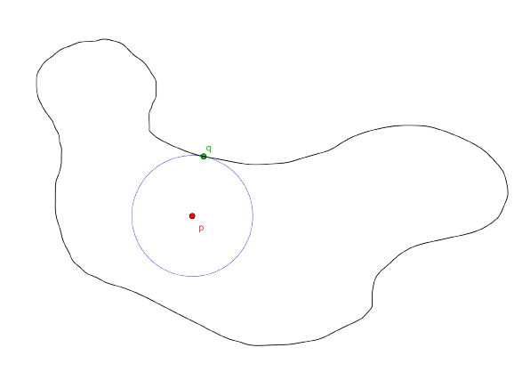

Triángulos Inscritos en Curvas de Jordan
¿Será cierto que toda curva de Jordan admite un triángulo equilátero inscrito? Es decir, si \(J\subset \mathbb{R^2}\) es una curva de Jordan (un subespacio del plano homeomorfo a una circunferencia), ¿existirán tres puntos de \(J\) que sean los vértices de un triángulo equilátero? Pues resulta que sí, y la prueba de este hecho es sencilla:
Tomemos un punto \(p\) en el interior de \(J\) y consideremos una circunferencia \(C\) con centro en \(p\) y que se quede contenida en el interior de \(J\).
Ahora hacemos crecer el radio de \(C\) de manera continua y nos detenemos cuando \(C\) toque a la curva \(J\) por primera vez, digamos en un punto \(q\).
Consideremos un triángulo equilátero inscrito en \(C\) tal que uno de sus vértices es \(q\), y llamemos \(v\) y \(w\) a los otros dos vértices. Como \(q\) fue el primer punto (o uno de los primeros puntos) de \(J\) que tocó a \(C\) cuando la hicimos crecer, entonces \(v\) y \(w\) están en \(int(J)\cup J\).
Giramos el triángulo \(qvw\) con respecto a \(q\) (usándolo como pivote) hasta que otro de los vértices, \(v\) o \(w\), también esté en \(J\), sin pérdida de generalidad supongamos que giramos y el primer vértice que toca a \(J\) es \(w\), y notemos que \(v\) sigue estando en \(int(J)\cup J\).

Si \(v\) está en \(J\) entonces \(qvw\) es un triángulo equilátero inscrito en \(J\), y si \(v\) está en \(int(J)\) entonces movemos a \(w\) de manera continua por \(J\) hasta llegar a un punto \(m\in J\) que esté a distancia máxima de \(q\) en \(J\), y al ir moviendo \(w\) podemos ir moviendo a \(v\) de manera continua y de tal forma que \(qvw\) siga siendo un triángulo equilátero en cada momento. Notemos que cuando \(w\) llega al punto \(m\) se tiene que \(v\) debe estar en \(ext(J)\cup J\), pues de no ser así podríamos encontrar un punto de \(J\) cuya distancia a \(q\) sea mayor que \(d(q,m)\). Si \(v\) está en \(J\) ya acabamos y si \(v\in ext(J)\), como \(v\) empezó adentro de \(J\) y acabó afuera y lo fuimos moviendo de manera continua, entonces \(v\) tuvo que cruzar a \(J\) en algún momento, y con los puntos \(v\) y \(w\) de dicho momento tenemos que \(qvw\) es un triángulo equilátero inscrito en \(J\).
En la siguiente animación esta última idea queda más clara, pues se puede ver cómo al mover \(w\) se mueve \(v\), de modo que \(qvw\) siempre forma un triángulo equilátero, y en algún momento \(v\) pasa por la curva \(J\).
La idea que acabamos de usar se puede generalizar para probar que las curvas de Jordan inscriben todo tipo de triángulos, es decir, si \(J\) es una curva de Jordan y \(T\) es un triángulo entonces \(J\) contiene los tres vértices de un triángulo semejante a \(T\) [1]. La prueba de este hecho es completamente análoga a la que acabamos de hacer para triángulos equiláteros, lo que cambia es que el triángulo que tomamos inscrito en la circunferencia lo tomamos semejante a \(T\) y de tal forma que el punto \(q\) corresponda al vértice con el ángulo más grande.
Ahora sabemos que las curvas de Jordan siempre admiten al menos un triángulo equilátero inscrito, pero todavía podemos decir más al respecto. En [1] Meyerson probó que dada una curva de Jordan \(J\), cada uno de sus puntos, salvo quizá dos, es un vértice de un triángulo equilátero inscrito en \(J\). En particular, este resultado nos dice que las curvas de Jordan inscriben muchos triángulos equiláteros y que el conjunto de puntos vértice es muy grande.
Además, en [1] Meyerson propuso que si \(T\) es un triángulo y \(J\) es una curva de Jordan que cumple ciertas condiciones de suavidad entonces el conjunto de puntos vértice de \(J\) es grande, como en el caso en el que \(T\) es un triángulo equilátero. En [2] M.Nielsen probó que si \(J\) es una curva de Jordan cualquiera (sin pedir condiciones de suavidad) y \(T\) es un triángulo entonces el conjunto de \(T\)-puntos vértice de \(J\) es denso en \(J\).
Triángulos Inscritos en Otros Continuos del Plano
En la sección anterior vimos que cualquier curva de Jordan inscribe todo tipo de triángulos. En otras palabras, para cualquier triángulo \(\Delta\), no importa cómo deformemos a \(S^1\), la curva resultante siempre contendrá los 3 vértices de un triángulo semejante a \(\Delta\). Esta es una propiedad que tiene \(S^1\), y para hacer referencia a ella diremos simplemente que \(S^1\) inscribe todo tipo de triángulos.
Una pregunta natural es: ¿cuáles otros subespacios del plano inscriben todo tipo de triángulos? es decir ¿para que espacios \(X\subset \mathbb{R}^2\) se cumple que, para cualquier triángulo \(\Delta\), todo subespacio del plano homeomorfo a \(X\) contiene los tres vértices de un triángulo semejante a \(\Delta\)?
Veamos que el triodo simple (un continuo homeomorfo a la letra T) inscribe todo tipo de triángulos.
Sea \(T\) un triodo simple, formado por tres arcos \(A_1,A_2,A_3\) con vértice \(v = A_1 \cap A_2 \cap A_3\) y sea \(\Delta\) un triángulo (con lados \(a,b,c\) y ángulos \(\alpha , \beta , \gamma\).
Consideremos la función \(g:\mathbb{C} \times \mathbb{C} \to \mathbb{C}\) dada por \((z_1,z_2) \mapsto \frac{a}{b}e^{i\gamma}(z_2-z_1)+z_1\). Pensando a los puntos del plano como números complejos y viceversa, lo que le hace la función \(g\) a una pareja de puntos \(\bar{x_1},\bar{x_2}\) es rotar \(\bar{x_2}\) respecto a \(\bar{x_1}\) \(\gamma\) radianes en sentido antihorario, y al punto resultante lo acerca o aleja de \(\bar{x_1}\), de modo que \(\bar{x_1},\bar{x_2}\) y \(g(\bar{x_1},\bar{x_2})\) forman un triángulo semejante a \(\Delta\). Animación
Ahora, sea \(C\) una circunferencia con centro en \(v\) y con radio suficientemente pequeño para que intersecte a cada uno de los arcos \(A_i\), y para cada \(i=1,2,3\) sea \(B_i\) el subarco de \(A_i\) que va del vértice del triodo al primer punto donte \(A_i\) intersecta a \(C\) (avanzando desde \(v\) por \(A_i\)). Sea \(T_2\) el triodo formado por los arcos \(B_i\). Probaremos que \(T_2\) contiene los tres vértices de un triángulo semejante a \(\Delta\).
Notemos que \(T_2\) se queda contenido adentro de \(C\) y divide su interior en 3 regiones \(R_1,R_2\) y \(R_3\).
Ahora, consideremos una circunferencia \(W\) con centro en \(v\) y radio suficientemente pequeño, de tal forma que si dos puntos están en el interior de \(W\) entonces su imagen bajo \(g\) cae en el interior de \(C\).
Sean \(p,q\in (B_1\cap int(W))\backslash \{v\}\), y tales que al avanzar desde \(v\) por \(B_1\) \(p\) aparece primero que \(q\).
Como \(p,q\) están en el interior de \(W\) entonces \(g(p,q)\) está en el interior de \(C\). Tenemos tres casos. Si \(g(p,q)\) está en \(T2\) entonces ya acabamos, \(p,q\) y \(g(p,q)\) forman un triángulo semejante a \(\Delta\) que está inscrito en \(T_2\) y por tanto en \(T\).
Si \(g(p,q)\) está en la región \(R_1\) (la que no contiene a \(B_1\)) en su frontera) podemos ir acercando \(p\) a \(q\) de manera continua hasta que \(g(p,q)\) deje de estar en \(R_1\). \(g(p,q)\) también se irá moviendo de manera continua, formando un arco que se queda contenido en el interior de \(C\), que inicia en la región \(R_1\) y termina fuera de ella, por lo que en algún momento debe cruzar por \(T_2\). Cuando \(g(p,q)\) cruza a \(T_2\), \(p,q\) y \(g(p,q)\) forman un triángulo semejante a \(\Delta\) inscrito en \(T_2\) y por tanto también inscrito en \(T\).
Si \(g(p,q)\) está en la región \(R_2\) podemos mover a \(p\) de manera continua hasta un punto de \(B_2\cap int(W)\) y luego acercar \(q\) a \(p\) de manera continua hasta que, como en el caso anterior, \(g(p,q)\) acabe fuera de la región \(R_2\). Como antes, al mover \(p\) y \(q\) de manera continua por \(T_2\) (sin que se crucen ni salgan de \(W\)), \(g(p,q)\) también se va moviendo de manera continua, y va formando un arco que inicia en la región \(R_2\), termina fuera de ésta región y se queda contenido en el interior de la circunferencia \(C\). Por tanto, en algún momento \(g(p,q)\) debe cruzar por \(T_2\), y en dicho momento \(p,q\) y \(g(p,q)\) forman un triángulo semejante a \(\Delta\) que está inscrito en \(T_2\) y por tanto también en \(T\). (Ver el frame de geogebra de abajo)
Si \(g(p,q)\) está en la región \(R_3\) se puede proceder de manera análoga al caso anterior.
(En el siguiente frame de geogebra se pueden manipular los puntos \(p\) y \(q\). Arrastre a \(p\) al arco \(B_2\) sin salir de la circunferencia \(W\) (la naranja) y luego acerque \(q\) hacia \(p\). Observe que la imagen de estos dos puntos bajo la función \(g\) cruza al triodo en algún punto).
En cualquier caso, \(T\) contiene los tres vértices de un triángulo semejante a \(\Delta\). Como \(T\) y \(\Delta\) fueron arbitrarios, concluimos que los triodos inscriben todo tipo de triángulos.
Referencias
- Mark D. Meyerson. Equilateral triangles and continuous curves. Fund. Math., 110(1):1–9, 1980.
- Mark J. Nielsen. Triangles inscribed in simple closed curves. Geom. Dedicata, 43(3):291–297, 1992.